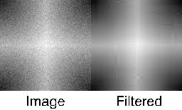

The WV_DENOISE function uses the wavelet transform to filter (or de-noise) a multi-dimensional array.
WV_DENOISE computes the discrete wavelet transform of Array , and then discards wavelet coefficients smaller than a certain threshold. WV_DENOISE then computes the inverse wavelet transform on the filtered coefficients and returns the result.
Result = WV_DENOISE( Array [ , Family, Order ] [, COEFFICIENTS = value ] [, CUTOFF = variable ] [, DENOISE_STATE = variable ] [, / DOUBLE ] [, DWT_FILTERED = variable ] [, PERCENT = value ] [, THRESHOLD = value ] [, WPS_FILTERED = variable ])
The result is an array of the same dimensions as the input Array . If Array is double precision or /DOUBLE is set then the result is double precision, otherwise the result is single precision.
A one-dimensional array of length N, of floating-point or complex type.
A scalar string giving the name of the wavelet function to use for the transform. WV_DENOISE will construct the actual function name by removing all white space and attaching a prefix of 'WV_FN_'.
Note: WV_DENOISE may only be used with discrete wavelets, such as WV_FN_COIFLET, WV_FN_DAUBECHIES, WV_FN_HAAR, and WV_FN_SYMLET.
The order number, or parameter, for the wavelet function given by Family . If not specified the default for the wavelet function will be used.
Note: If you pass in a DENOISE_STATE structure, then Family and Order may be omitted. In this case the values from DENOISE_STATE are used.
Set this keyword to a scalar specifying the number of wavelet coefficients to retain in the filtered wavelet transform. This keyword is ignored if keyword PERCENT is present.
Set this keyword to a named variable that, upon return, will contain the cutoff value of wavelet power that was used for the threshold.
This is both an input and an output keyword. If this keyword is set to a named variable, then on exit, DENOISE_STATE will contain the following structure:
|
Tag |
Type |
Definition |
|
FAMILY |
STRING |
Name of the wavelet function used. |
|
ORDER |
DOUBLE |
Order for the wavelet function. |
|
DWT |
FLT/DBLARR |
Discrete wavelet transform of Array |
|
WPS |
FLT/DBLARR |
Wavelet power spectrum, equal to |DWT|^2 |
|
SORTED |
FLT/DBLARR |
Percent-normalized WPS, sorted |
|
CUMULATIVE |
FLT/DBLARR |
Cumulative sum of SORTED |
|
COEFFICIENTS |
LONG |
Number of coefficients retained |
|
PERCENT |
DOUBLE |
Percent of coefficients retained |
Note: If the DOUBLE keyword is set, then the arrays will be of type double.
Upon input, if DENOISE_STATE is set to a structure with the above form, then DWT, WPS, SORTED, and CUMULATIVE will not be recomputed by WV_DENOISE. This is useful if you want to make multiple calls to WV_DENOISE using the same Array .
Note: No error checking is made on the input values. The values should not be modified between calls to DENOISE_STATE.
Set this keyword to force the computation to be done using double-precision arithmetic.
Set this keyword to a named variable in which the filtered discrete wavelet transform will be returned.
Set this keyword to a scalar specifying the percentage of cumulative power to retain.
Note: If neither COEFFICIENTS nor PERCENT is present then all of the coefficients are retained (i.e. no filtering is done).
Set this keyword to a scalar specifying the type of threshold. The actual threshold, T, is set using COEFFICIENTS or PERCENT. Possible values are:
0 - Hard threshold (this is the default). The hard threshold sets all wavelet coefficients with magnitude less than or equal to T to zero.
1 - Soft threshold. The soft threshold sets all DWT[i] with magnitude less than T to zero, and also linearly reduces the magnitude of the each retained wavelet coefficient by T : Positive coefficients are set equal to DWT[i] – T , while negative coefficients are set equal to DWT[i] + T .
Set this keyword to a named variable in which the filtered wavelet power spectrum will be returned.
Remove the noise from a 128 x 128 image:
image = dist(128) + 5*randomn(1, 128, 128)
; Keep only 100 out of 16384 coefficients:
denoise = WV_DENOISE(image, 'Daubechies', 2, COEFF=100, $
DENOISE_STATE=denoise_state)
window, xsize=256, ysize=155
tvscl, image, 0
tvscl, denoise, 1
xyouts, [64, 196], [5, 5], ['Image', 'Filtered'], $
/device, align=0.5, charsize=2
print, 'Percent of power retained: ', denoise_state.percent
IDL prints:
Percent of power retained: 93.151491
Change to a “soft” threshold (use DENOISE_STATE to avoid re-computing):
denoise2 = WV_DENOISE(image, COEFF=100, $
DENOISE_STATE=denoise_state, THRESHOLD=1)
|
 |
|
5.4 |
Introduced |